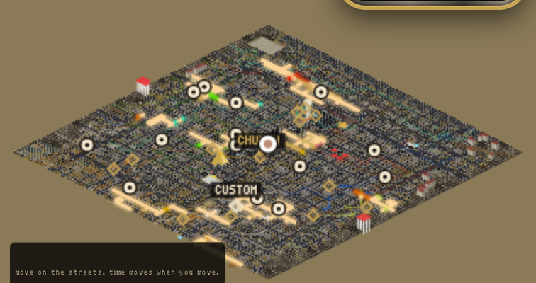
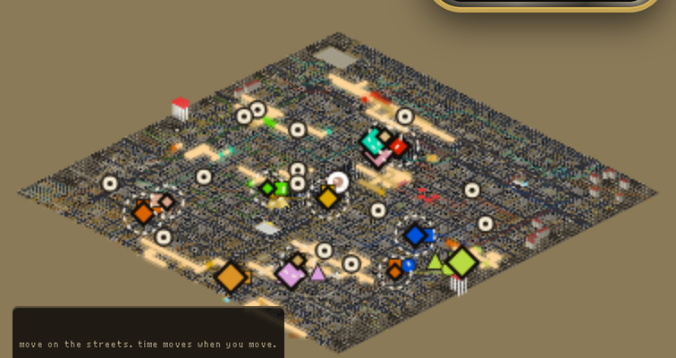
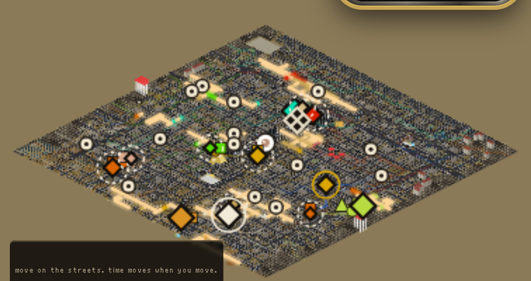
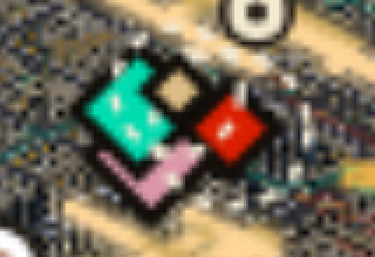
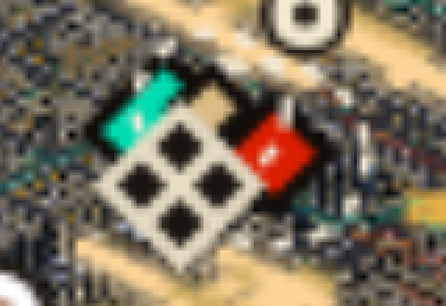
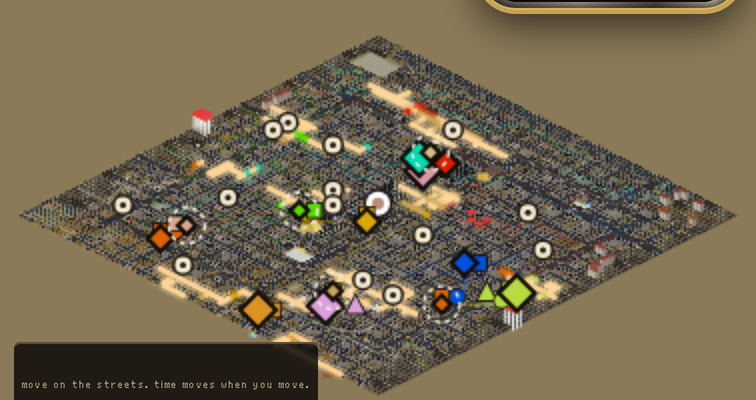
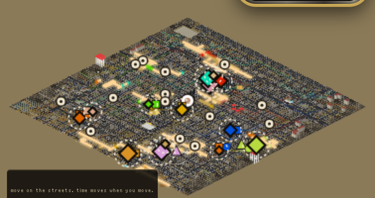

THE MAP AS IT IS, REAL FRAME

The map right now. All fourteen crews are on it, as thin gold outlines.
You cannot tell a big crew from a small one, and you cannot tell whose base is whose.
THE LIST, SAME MAP, SAME CAMERA

Same map, drawn from the list. The size says how big the base is. The colour
is the crew's own. A dashed ring means it can be attacked right now, halfway through an act.
BIG DIAMOND = fortress (5)MIDDLE = town (4)SMALL = camp (5)
CIRCLE = caravan (10)SQUARE = patrol (14)TRIANGLE = a crew going to take something (4)
AFTER A RAID, SAME MAP

Three bases changed. The Mob's base is ruined (the pale diamond with a dark cross,
at the top of the pile). You took the Cartel's (the pale one, with a ring). The Church took the Blues' (gold
with a gold ring). The eight roaming crews those three bases had out are gone. 28 became 20.
THE NORTH PILE, CLOSE UP, BEFORE

Four bases in the north sit almost on top of each other. Teal is the Network, red is the
Reds, the small tan one is the Volunteers, and under them is the Mob.
THE NORTH PILE, CLOSE UP, AFTER THE MOB FALLS

A ruin draws on top so it is never hidden. Pale diamond, dark cross. Nobody is
out of it and nobody can be sent from it.
WHY THE LAST PART MATTERS. Before this, the 28 crews were a fixed set. They walked out and
back for ever. If you ruined the Mob, its patrols would have kept walking out of a ruin. Now a crew
belongs to its base. No base, no crew.
THE HARD ONES COME LATE: EARLY IN AN ACT

Early in an act: 5 bases can be attacked. Only the camps.
A THIRD OF THE WAY IN
A third of the way in: 9. The camps and the four towns. The five fortresses hold.
TWO THIRDS IN

Two thirds in: all 14. Now the fortresses can fall too. The cut is the same thirds you
ruled for towns: a camp from the start, a town a third in, a fortress two thirds in.
TWO THINGS I GOT WRONG.
1. Last round I told you the game already had more than fourteen crews, so we were fine.
That was too easy. Battle Brothers has no fixed number. Every place buys crews with what it has and
sends them out over time. Ours are set once when the game starts and never change. This list fixes
one half: a base that falls sends nobody. It does not make a base buy new crews.
2. At this zoom, 6 of the 14 bases sit on top of another one. The four in the north are only
6 to 13 pixels apart. That is the map being too small, not the list. It is the reason you ruled the
map needs Battle Brothers' pixel count.
WHAT THIS DOES NOT DO YET. Nothing in the game can raid a base, so nothing calls this. The fight
will, when there is one. And it is not on the live map (the play screen is on hold), so these markers
are NOT IN A TAB YET; this page is the picture of them. Thumbs up if this is the right shape. Thumbs
down and tell me what is wrong with it.